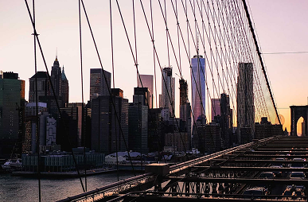
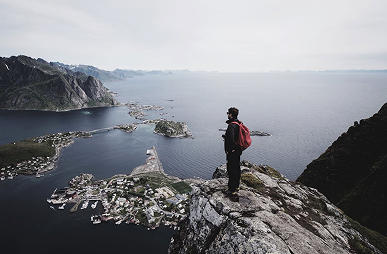
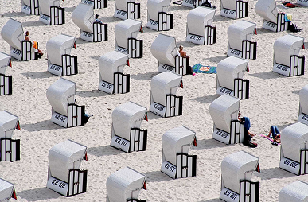

Japan House opens in mountainside to foster peak creativity.
Enim omittam qui id, ex quo atqui dictas complectitur. Nec ad timeam accusata, hinc justo falli id eum, ferri novum molestie eos cu.






LATEST POSTS